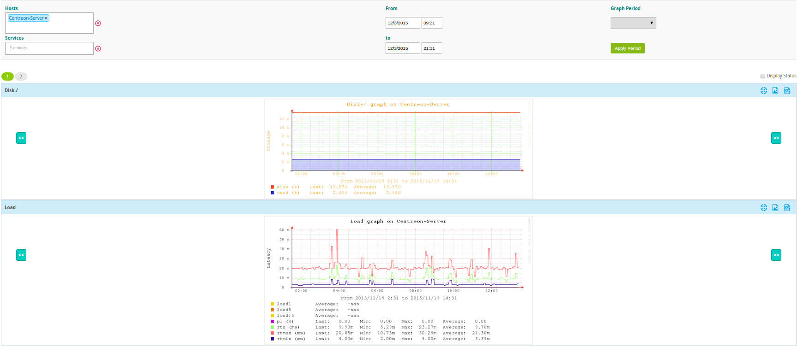

Graphs¶
Definition¶
Centreon can be used to generate graphs from monitoring information. There are two types of graph:
- Performance graphs serve to view the evolution of services intuitively. E.g.: filling level of a hard disc, network traffic, etc.
- History graphs (or status graphs) serve to view the evolution of the statuses of a service.
Performance graphs always have a time period for the x-axis and a unit as the y-axis (Volts, Octets, etc.). History graphs always have a time period for the x-axis, their y-axes do not vary. Only the color of the graph can be used to view the status of the object:
- Green for OK status
- Orange for WARNING status
- Red for CRITICAL status
- Grey for UNKNOWN status
Example of performance graphs:

Example of status history graphs:

Visualization¶
Performance graphs¶
There are several ways to view performance graphs:
- Viewing the graph in the list of services (Monitoring ==> Services) by mouse-over the icon

- Viewing the graph from the page of details of an object by clicking on View graphs for host
- Go into the menu: Monitoring ==> Performances to view multiple graphs
Status graphs¶
In the same way as for the performance graphs, there are several ways of accessing status history graphs:
- From the detail page of an object (see the chapter covering real time monitoring)
- From the menu: Monitoring ==> Performances, by first selecting a specific service and then checking the Display Status box.
Viewing multiple graphs¶
To view all graphs, go into the menu: Monitoring ==> Performances.
All the filter on the top of the page allow you to select the graph you want on the period you want.
The option Hosts show all graphs to all hosts linked.
The option Services show only graph of the selected services.
The option Graph Period can be used to select the time period over which we want to view the graphs. The drop-down list can be used to select predefined time periods.
It is possible to choose the time period manually using the fields From and To, this replaces the predefined selection.
Several actions are possible on the graphs:
- Split components: separates multiple curves of a graph into multiple graphs each containing one curve
- Display Status: Displays the history graphs linked to performance graphs displayed
To use the data from graphs, it is possible to:
- View the performance graph on one day, one week, one month or one year by clicking on the performance graphs of your choice
- Zoom on the graph by clicking on the icon

- Back-up the graph by clicking on the icon

- Download all the data contained in the graph in the .csv format by clicking on the icon